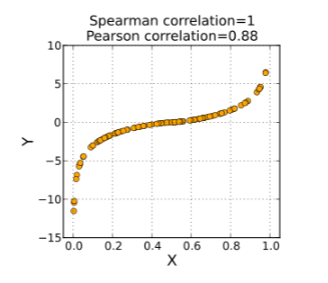

5 Correlação
5.1 Introdução
A correlação estatística é uma medida quantitativa que descreve o grau de associação ou relacionamento entre duas variáveis. Ela busca identificar se existe uma relação entre essas variáveis e determinar a direção e a intensidade dessa relação.
Na análise estatística, as variáveis podem ser qualquer tipo de informação mensurável, como idade, altura, renda, tipo de parto, entre outras. A correlação estatística nos permite entender se existe uma relação consistente entre essas variáveis. Por exemplo, podemos investigar se a prática regular de exercícios está relacionada à redução do risco de doenças cardíacas.
Um ponto a ser mencionado é que a correlação não é usada para prever o valor de uma variável a partir de outra. Embora a correlação estatística seja uma medida útil para determinar o grau de associação entre duas variáveis, ela não fornece informações suficientes para fazer previsões precisas sobre os valores específicos de uma variável com base em outra. Isso ocorre porque a correlação mede apenas a relação estatística entre as variáveis, sem estabelecer uma relação causal ou fornecer informações sobre a direção precisa da relação.
Aqui também podemos abrir um espaço para falar sobre uma frase que, se você tem um certo contato com a área da estatística, certamente já ouviu: “correlação não implica causalidade”. Essa frase ressalta a importância de entender que, mesmo que duas variáveis estejam correlacionadas, isso não significa necessariamente que uma variável cause diretamente mudanças na outra. Em outras palavras, a existência de uma correlação entre duas variáveis não estabelece uma relação de causa e efeito entre elas. Fatores não considerados poder influenciar as variáveis analisadas.
Um exemplo clássico é a relação entre o consumo de sorvete e afogamentos na praia no verão. Não podemos afirmar que comer sorvete está causando afogamentos ou o contrário. Durante o verão, as temperaturas são mais altas, o que leva tanto ao aumento do consumo de sorvete quanto à maior probabilidade das pessoas irem à praia para nadar e se refrescar. A temperatura é um fator que influencia tanto o consumo de sorvete quanto o comportamento de nadar no mar.
Para fazer previsões precisas sobre o valor de uma variável com base em outra, são necessárias técnicas mais avançadas, como regressão linear ou modelos de aprendizado de máquina. Esses métodos consideram outros fatores além da correlação.
Portanto, é importante estar sempre atento as limitações das correlações para ocorrer equivocos na hora de analisar os dados. A correlação fornece um indicador inicial de associação, mas não é suficiente para estabelecer relações de causa e efeito ou fazer previsões de uma variável com base em outra.
A correlação estatística é frequentemente representada por um valor chamado coeficiente de correlação. Esse coeficiente varia de -1 a +1. Um valor de -1 indica uma correlação perfeita negativa, quando uma aumenta, a outra diminui de forma consistente. Um valor de +1 indica uma correlação perfeita positiva, onde as variáveis variam na mesma direção (aumentam ou diminuem juntas). Um valor próximo a 0 sugere que não há uma relação linear aparente entre as variáveis.
Pesquisadores e analistas podem obter informações valiosas para tomada de decisões e previsões com base em correlações estatísticas. Por exemplo, na área da saúde, a correlação entre fatores de risco e incidência de doenças pode auxiliar na identificação de medidas preventivas.
Em geral, a correlação estatística é uma ferramenta essencial para compreender as relações entre variáveis e explorar padrões e tendências nos dados.
Para os exemplos neste capítulo iremos utilizar a base de dados de indicadores obstétricos para os exemplos com variáveis quantitativas e a base Dados de COVID-19 em gestantes e puérperas para os exemplos com variáveis qualitativas. No capítulo de introdução você pode ver mais detalhes sobre as bases.
5.2 Diagramas de dispresão
“Um diagrama de dispersão mostra a relação entre duas variáveis quantitativas, medidas nos mesmos indivíduos. Os valores de uma variável aparecem no eixo horizontal e os valores da outra variável aparecem no eixo vertical. Cada indivíduo nos dados aparece como o ponto no gráfico determinado pelos valores de ambas as variáveis para tal indivíduo”. (MOORE, 2011, p.77).
Um diagrama de dispersão é uma ferramenta construída utilizando um sistema de coordenadas cartesianas, em que os valores de uma variável são plotados no eixo horizontal (eixo X) e os valores da outra variável são plotados no eixo vertical (eixo Y). Cada ponto no gráfico representa um indivíduo específico e é determinado pelos valores correspondentes das duas variáveis para aquele indivíduo.
Ao observar um diagrama de dispersão, podemos visualmente analisar a tendência ou padrão dos pontos no gráfico. Dependendo da relação entre as variáveis, os pontos podem formar um padrão linear (indicando uma correlação positiva ou negativa), uma dispersão aleatória (indicando ausência de correlação) ou um padrão não linear (indicando uma relação complexa).
Em resumo, um diagrama de dispersão é uma ferramenta gráfica que nos permite visualizar a relação entre duas variáveis quantitativas em um conjunto de dados. Ele oferece uma representação visual simples e intuitiva, facilitando a identificação de padrões, tendências e possíveis associações entre as variáveis em estudo.
Como dito anteriormente, também vamos trabalhar com a parte prática no R. Uma maneira fácil de criar diagramas no R é utilizando o famoso pacote. Como já discutimos sobre a criação de diagramas de dispersão no capítulo de Estatística Descritiva, não vamos nos aprofudnar na explicação do código. Vamos apenas deixar um exemplo para relembrar como pode plotar este tipo de gráfico usando o pacote ggplot2 . Para o exemplo abaixo iremos utilizar a base Dados de COVID-19 em gestantes e puérperas.
library(ggplot2)
dados <- readr::read_rds("dados/dados_indicadores.rds")
dados |>
ggplot(aes(porc_peso_menor_2500, porc_premat)) +
geom_point(color = "darkorchid4") +
theme_bw()
5.3 Medindo o grau de relacionamento de duas variáveis
O grau de relacionamento entre duas variáveis pode ser medido usando o coeficiente de correlação, que é uma medida estatística comumente utilizada. O coeficiente de correlação quantifica a força e a direção da relação linear entre as variáveis. Existem pelo menos 17 maneiras diferentes de medir o grau de relacionamento entre duas variáveis!
Algumas maneiras são:
Correlação de Pearson: o método mais comum de correlação, aplicável quando ambas as variáveis são quantitativas.
Correlação de postos de Spearman: aplicável quando ambas as variáveis são quantitativas ou ordinais.
Correlação de Kendall: semelhante a correlação de postos de Spearman.
Correlação biponderada: medida de similaridade baseada na mediana e não na média, sendo assim menos sensível a outliers.
Correlação bisserial: correlação entre uma variável dicotômica e uma variável quantitativa.
Correlação polisserial: correlação entre uma variável politômica e uma variável quantitativa.
Correlação tetracórica: é a correlação entre duas variáveis quantitativas não-observáveis (latentes) que foram medidas em uma escala dicotômica. Assume-se que a distribuição conjunta de (X,Y) tem distribuição normal bivariada.
Neste capítulo vamos nos aprofundar em dois tipos de correlação: de Pearson e de postos de Spearman.
5.3.1 Correlação de Pearson
O coeficiênte de correlação de Pearson, também denominado na literatura por correlação produto-momento, é uma medida da força de uma associação linear entre duas variáveis quantitativas.
O coeficiente de correlação de Pearson amostral, representado por r, varia de -1 a +1. Um valor de +1 indica uma correlação positiva perfeita, o que significa que as variáveis têm uma relação linear positiva consistente: quando uma variável aumenta, a outra também aumenta de maneira proporcional. Analogamente, um valor de -1 indica uma correlação negativa perfeita, ou seja, as variáveis têm uma relação linear negativa constante: quando uma variável aumenta, a outra diminui de maneira proporcional. Um valor de 0 indica ausência de correlação linear.
O cálculo do coeficiente de correlação de Pearson envolve a covariância entre as duas variáveis e os desvios padrão de cada variável. Essa medida considera tanto a dispersão dos valores individuais quanto a relação entre eles.
Definição: dado n pares numéricos \((x_1, y_1)...(x_n, y_n)\) o coeficiente de correlação amostral r é dado por:
\[ r = \frac{S_{XY}}{\sqrt{S_{XX}}\sqrt{S_{YY}}}, \]
em que
\(S_{XX} = S^2_{X} = \sum^n_{i=1}\frac{(x_i-\bar{x})^2}{n-1},\)
\(S_{YY} = S^2_{Y} = \sum^n_{i=1}\frac{(y_i-\bar{y})^2}{n-1},\)
\(S_{XY} = \sum^n_{i=1}\frac{(x_i-\bar{x})(y_i-\bar{y})}{n-1}.\)
O termo \(S_{XY}\) é conhecido por covariância amostral, tendo como algumas características:
Essa medida varia nos reais.
É dependente das unidades de medida em que as variáveis X e Y foram medidas (desvantagem).
Também é uma medida de associação linear.
Fórmula alternativa para o cálculo de r:
\[ r = \frac{\sum^n_{i=1}x_iy_i-n\bar{x}\bar{y}}{\sqrt{[\sum^n_{i=1}x^2_i-n\bar{x}^2][\sum^n_{i=1}y^2_i-n\bar{y}^2]}} \]
Algumas propriedades do coeficiente de correlação de Pearson:
Como já mencionado, o coeficiente de correlação de Pearson varia entre -1 e +1. Um valor de -1 indica uma correlação negativa perfeita, +1 indica uma correlação positiva perfeita e 0 indica ausência de correlação linear.
O coeficiente de correlação de Pearson independe das unidades com as quais x e y são medidos. Isso significa que ele não é afetado por mudanças nas unidades de medida ou por transformações lineares das variáveis.
O coeficiente de correlação de Pearson é simétrico, o que significa que a correlação entre as variáveis X e Y é a mesma que a correlação entre as variáveis Y e X.
O coeficiente de correlação de Pearson é sensível a valores extremos ou outliers nos dados. Se houver pontos discrepantes que se afastem da tendência linear geral, eles podem influenciar significativamente o valor do coeficiente de correlação.
E por último, mas não menos importante: O coeficiente de correlação de Pearson mede apenas a relação linear entre as variáveis. Ele pode não capturar relações não lineares, mesmo que existam associações substanciais entre as variáveis por meio de outras formas funcionais.
5.3.1.1 Quando é possível dizer que existe uma correlação forte entre as variáveis e quando a correlação é fraca?
Quanto mais forte a associação das duas variáveis, mais próximo o coeficiente de correlação de Pearson, estará de +1 ou -1, dependendo se a relação é positiva ou negativa, respectivamente. Alguns autores sugeriram algumas maneiras de interpretar esses valores.
Devore (2014) sugere:
Valor da correlação Interpretação | r | \(\leq\) 0.5 Fraco 0.5 \(<\) | r | \(<\) 0.8 Moderado | r | \(\geq\) 0.8 Forte Hinkle, Wiersma & Jurs (2003) sugerem (adaptado):
Valor da correlação Interpretação | r | \(<\) 0.3 Desprezível 0.3 \(\leq\) | r | \(<\) 0.5 Fraco 0.5 \(\leq\) | r | \(<\) 0.7 Moderado 0.7 \(\leq\) | r | \(<\) 0.9 Forte | r | \(\geq\) 0.9 Muito forte
Lembre-se que r é um coeficiente de correlação amostral de Pearson, ou seja, uma estimativa da correlação populacional \(\rho\). Assim, a teoria dos testes de hipóteses pode ser utilizada para verificar se com base na estimativa r é possível conclur pela ausência ou não da correlação de Pearson populacional. Para isso, considera-se os pares (\(x_i, y_i\)) como sendo tirados de uma população bivariada de pares em que (X, Y) tem uma função de probabilidade (f.p.) ou função densidade de probabilidade (f.d.p.) conjunta.
O coeficiente de correlação populacional entre duas variáveis aleatórias X e Y é dada por:
\[ \rho = \rho (X, Y) = \frac{Cov(X, Y)}{\sigma_X \sigma_Y}, \]
em que \[Cov(X, Y) = E[(X- \mu_X)(Y-\mu_Y)]\]
pode ser desenvolvida como
\(\sum_x \sum_y (x-\mu_X)(y-\mu_Y) p(x,y)\), se X, Y discretos;
\(\int_{-\infty}^\infty \int_{-\infty}^\infty (x-\mu_X)(y-\mu_Y) f(x,y) \partial x \partial y\), se X, Y continuos
Uma suposição que também deve ser feita para que o teste de hipóteses para \(\rho\) possa ser executado é que a distribuição de probabilidade conjunta de (X, Y) é dada pela normal bivariada. Vejamos agora como é a função densidade de (X, Y) dada pela normal bivariada.
A distribuição de probabilidades conjunta de (X, Y) é definida por:
\[ f(x,y) = \frac{1}{2\pi \sigma_X \sigma_Y \sqrt{1-\rho^2}} e^{- [(\frac{x-\mu_X}{\sigma_X})^2 -2\rho(\frac{x-\mu_X}{\sigma_X})(\frac{y-\mu_Y}{\sigma_Y}) + (\frac{y-\mu_Y}{\sigma_Y})^2]} \]
com x, y \(\in \mathbb{R}\) em que \(\mu_X\) e \(\sigma_X\) são a média e o desvio-padrão de X, \(\mu_Y\) e \(\sigma_Y\) são a média e o desvio-padrão de Y e \(\rho\) é o coeficiente de correlação entre X e Y.
5.3.1.2 Propiedades
As distribuições marginais de X e Y tem distribuição normal univariada.
As distribuições condicionais Y | X e X | Y tem distribuição normal univariada. Ou seja, condicionando uma das variáveis, a distribuição da outra também e normal.
Quando \(\rho = 0\), a função de densidadade conjunta f(x, y) pode ser fatorada como f(x) f(y), o que implica que as variáveis aleatórias X e Y são independentes.
No geral, se X e Y forem variáveis aleatória independentes quaisquer então \(\rho = 0\)
No geral, não é verdade que se \(\rho = 0\) então X e Y são variáveis aleatórias independentes. Aqui destaca-se que a correlação zero não garante a independência entre as variáveis aleatórias.
5.3.1.3 Hipóteses
\(H_0 : \rho = 0\) (não há correlação linear)
\(H_a: \rho > 0\) ou \(\rho < 0\) ou \(\rho \ne 0\)
A estatística do teste é dada por:
\[ t = \frac{r\sqrt{n-2}}{\sqrt{1-r^2}} \]
Valor crítico do teste:
Sob \(H_0\) verdadeira, a estatística t tem uma distribuição t-Student com n - 2 graus de liberdade. Dessa forma, valores críticos do teste são obtidos da tabela t-Student com n - 2 graus de liberdade.
5.3.1.4 Correlação de Pearson no R
No software R é possível calcular correlações de maneiras relativamente fáceis. Uma das formas mais rápidas e fáceis é utilzando a função cor() do próprio CRAN do R. Você pode verificar a documentação completa dessa função aqui. Essa função possui alguns argumentos, sendo os principais:
x: um vetor númerico, matriz ou dataframe
y: um vetor númerico, matriz ou dataframe com dimensões compatíveis para “x”. O padrão é equivalente a “y = x” (mais eficiente).
method: uma cadeia de caracteres indicando qual coeficiente de correlação (ou covariância) deve ser calculado (“pearson” (default), “kendall” ou “spearman”).
Para o primeiro exemplo vamos calcular a correlação entre as variáveis porc_peso_menor_2500 e porc_premat .
cor(dados$porc_peso_menor_2500, dados$porc_premat, method = "pearson")[1] 0.471422Veja que a saída é o valor da correlação, que neste caso foi de 0,47. Este valor, com base nas tabelas anteriores, é considerado uma correlação fraca.
Como citado anteriormente, o argumento x pode ser um dataframe, isso permite calcular a correlação simultanea entre as variáveis do banco de dados. Lembre-se que o argumento precisa ser númerico. Selecionamos apenas as variáveis da coluna 4 em diante, deixando de fora a variável uf , municipio e codigo .
knitr::kable(cor(dados[,4:14], method = "pearson"))| nascidos_vivos | porc_premat | porc_gesta_multipla | porc_cesarea | porc_0_consulta | porc_7mais_consulta | porc_apgar1_menor_7 | porc_apgar5_menor_7 | porc_anomalia | porc_peso_menor_2500 | porc_fem | |
|---|---|---|---|---|---|---|---|---|---|---|---|
| nascidos_vivos | 1.0000000 | 0.0087667 | 0.0114727 | -0.0396942 | 0.0218503 | -0.0429517 | 0.0017156 | -0.0052061 | 0.0165024 | 0.0262794 | 0.0017368 |
| porc_premat | 0.0087667 | 1.0000000 | 0.2702382 | 0.0010048 | 0.0617685 | -0.0629478 | 0.1198173 | 0.0988236 | 0.0677685 | 0.4714220 | 0.0065741 |
| porc_gesta_multipla | 0.0114727 | 0.2702382 | 1.0000000 | 0.1032576 | -0.0480217 | 0.0894464 | 0.0706529 | 0.0522301 | 0.0167000 | 0.3800594 | 0.0227140 |
| porc_cesarea | -0.0396942 | 0.0010048 | 0.1032576 | 1.0000000 | -0.2069008 | 0.4170415 | -0.1422882 | -0.1195010 | -0.0050339 | 0.0357249 | -0.0029110 |
| porc_0_consulta | 0.0218503 | 0.0617685 | -0.0480217 | -0.2069008 | 1.0000000 | -0.3891113 | 0.0219250 | 0.0658877 | -0.0347719 | -0.0153331 | -0.0135948 |
| porc_7mais_consulta | -0.0429517 | -0.0629478 | 0.0894464 | 0.4170415 | -0.3891113 | 1.0000000 | -0.0428351 | -0.0755027 | 0.0300719 | 0.0530526 | -0.0131028 |
| porc_apgar1_menor_7 | 0.0017156 | 0.1198173 | 0.0706529 | -0.1422882 | 0.0219250 | -0.0428351 | 1.0000000 | 0.3950857 | 0.0534130 | 0.1636157 | -0.0393211 |
| porc_apgar5_menor_7 | -0.0052061 | 0.0988236 | 0.0522301 | -0.1195010 | 0.0658877 | -0.0755027 | 0.3950857 | 1.0000000 | 0.0612535 | 0.1186371 | -0.0182849 |
| porc_anomalia | 0.0165024 | 0.0677685 | 0.0167000 | -0.0050339 | -0.0347719 | 0.0300719 | 0.0534130 | 0.0612535 | 1.0000000 | 0.0688200 | 0.0063300 |
| porc_peso_menor_2500 | 0.0262794 | 0.4714220 | 0.3800594 | 0.0357249 | -0.0153331 | 0.0530526 | 0.1636157 | 0.1186371 | 0.0688200 | 1.0000000 | 0.0497711 |
| porc_fem | 0.0017368 | 0.0065741 | 0.0227140 | -0.0029110 | -0.0135948 | -0.0131028 | -0.0393211 | -0.0182849 | 0.0063300 | 0.0497711 | 1.0000000 |
Veja que a saída acima é a correlação entre todas as variáveis. Na diagonal principal temos a correlação da variável com ela mesmo, por isso o valor é “1”. Note também que temos a presença de correlações positivas e negativas, onde, a maioria das correlações são próximas de 0. Note que nos dois exemplos específicamos o método pearson. Para utilizar o método de correlação de Spearman, basta indicar no argumento.
5.3.2 Correlação de Spearman
Também conhecida como correlação de postos, a correlação de Spearman é uma medida estatística que avalia a relação entre duas variáveis. Diferentemente da correlação de Pearson, que é baseada nos valores brutos das variáveis, a correlação de Spearman utiliza a ordem ou posição relativa dos valores, tornando-a adequada para analisar relações não-lineares ou quando os dados não seguem uma distribuição normal.
Com correlação de Spearman é possível obter uma medida de intensidade da associação entre X e Y sem fazer nenhuma pressuposição sobre a distribuição da população através de métodos não-paramétricos. Em outras palavras, não é necessário assumir que os dados seguem nenhuma distribuição específica. Isso torna a correlação de postos uma excelente ferramenta quando a distribuição dos dados não é conhecida.
O coeficiente populacional de Spearman, denotado por \(\rho_s\), é uma medida de correlação não-paramétrica. Sua versão amostral é denotada por \(r_S\).Essa medida, assim como na correlação de Pearson, também varia de -1 a 1, onde -1 indica uma correlação perfeitamente negativa e 1 indica uma correlação perfeitamente positiva.
A correlação de Spearman pode ser usado para avaliar associações de variáveis medidas no mínimo na escala ordinal. A escola ordinal é uma escala de medição que classifica as observações ordenadas, sem necessariamente quantificar a magnitude das diferenças entre as categorias. A correlação de Spearman é apropriada para esse tipo de escala, pois se baseia na classificação das observações em ordem crescente ou decrescente e compara as classificações das duas variáveis.
A correlaçao de postos quantifica a força e a direção da relação entre duas variáveis, com base na ordem ou posição relativa dos valores e não em seus valores brutos. Ela avalia a relação monotônica entre duas variáveis pareadas. Em uma relação monotônica, as variáveis tendem a mudar juntas mas não necessariamente a uma taxa constante, diferente por exemplo de uma relação linear.

O coeficiente de correlação de Sperarman é calculado atribuindo postos as observações. Postos podem ser definidos da seguinte forma:
Os dados estão ordenados quando estão arranjados de acordo com algum critério, tal como do menor para o maior, ou do melhor para o pior.
Um posto é um número atribuído a um item amostral individual de acordo com a sua posição na lista ordenada. Ao primeiro item atribui-se o posto 1, ao segundo item, posto 2, e assim por diante.
Se ocorrer um empate nos postos, o procedimento usual consiste em achar a média dos postos envolvidos e atribuir esse posto médio a cada um dos itens empatados.
O teste de correlação de Spearman consite em testar as seguintes hipóteses:
\(H_0: \rho_s= 0\)
\(H_1: \rho_s \ne 0\)
Existem duas formas de calcular a estatística do teste, quando não há empates e quando há empates.
- Sem empates: Depois de converter os dados amostrais em cada amostra em postos, se não existem postos empatados para a primeira variável e nem para a segunda variável, o valor exato da estatística do teste é dada por:
\[ r_s = 1 - \frac{6 \sum d^2}{n(n^2-1)} \]
- Com empates: Depois de converter os dados amostrais em cada amostra em postos, se qualquer das variáveis tiverem empates entre seus postos, o valor exato da estatística do teste é dada pela fórmula de correlação de Pearson substituindo os dados amostrais pelos respectivos postos.
\[ r_s = \frac{\sum_{i=1}^n R(X)_iR(Y)_i - nR(\bar{X})R(\bar{Y})}{\sqrt{[\sum_{i=1}^n R(X)_i^2 - nR(\bar{X})^2][\sum_{i=1}^n R(Y)_i^2 -nR(\bar{Y})^2]}} \]
onde n é o número de pares de dados e d é a diferença entre os postos de cada par.
O valor crítico pode ser dividido de duas formas, para amostrar pequenas (\(n \leq 30\)) e amostras grandes (\(n > 30\)). Para amostras pequenas, o valores críticos podem ser encontrados na Tabela A-9 do livro XXX. Já para amostras grandes, os valores são obtidos fazendo:
\[ r_c = \pm \frac{Z_{1-\alpha/2}}{\sqrt{n-1}} \]
Onde \(Z_{1-\alpha/2}\) é o quantil da normal padrão, se teste bilateral. Para teste unilateral, substitua \(Z_{1-\alpha/2}\) por \(Z_{1-\alpha}\).
5.3.3 Conclusões
O objetivo deste capítulo foi dar uma idéia geral do que é correlação, nos aprofundando nos dois métodos mais utilizados. Como mencionado anteriormente, existem diversas maneirar de calcular a correlação, onde cada uma irá se adequar melhor ao seu caso.